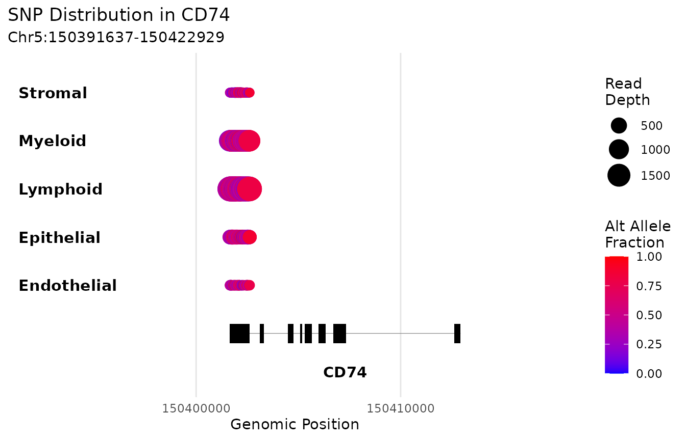
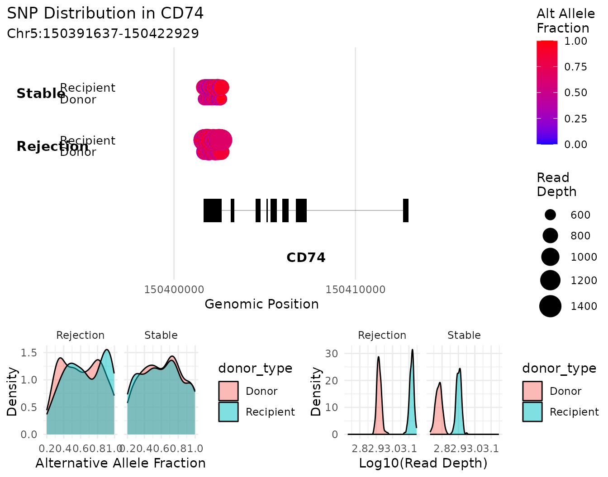

Presence and absence is a genotype test
findSNPsByGroup() asks which variants are present in one
group of cells and absent in another. Because germline genotype is fixed
at conception, that question is only meaningful when the two groups are
different genomes.
There are three regimes, and nothing in a cell-identity label tells you which one you are in:
| your two groups are | status |
|---|---|
| two genomes, one on each side, in one library | valid, and strong |
| the same genome | structurally empty — not underpowered, empty |
| several genomes on each side | a genetic association design, capped by group size |
checkGenotypeConcordance() measures which regime
applies, directly from the data. findSNPsByGroup() runs it
by default and warns.
Setup
sim <- simulateVariantCellData(verbose = FALSE)
inf <- inferDonorType(sim$metadata, vireo_dir = sim$vireo_dir, verbose = FALSE)
project <- variantCell$new()
for (s in sim$design$sample) {
project$addSampleData(
sample_id = s,
vireo_path = sim$vireo_paths[[s]],
cellsnp_path = sim$cellsnp_paths[[s]],
cell_data = sim$metadata[sim$metadata$Biopsy == s, ],
data_type = "dataframe",
prefix_text = sim$prefixes[[s]],
donor_type = inf$donor_types[[s]]
)
}
project$buildSNPDatabase()
sim$design
#> sample patient condition
#> 1 S1 P1 Rejection
#> 2 S2 P1 Rejection
#> 3 S3 P2 Rejection
#> 4 S4 P3 Stable
#> 5 S5 P4 StableNote that S1 and S2 are repeat biopsies of
the same patient. That gives us one of each regime to demonstrate.
Measuring the regime before testing
db <- project$snp_database
cm <- db$cell_metadata
regime <- function(label, i1, i2, ...) {
r <- checkGenotypeConcordance(db, i1, i2, verbose = FALSE, ...)
data.frame(contrast = label,
concordance = round(r$concordance, 3),
genomes = paste(r$n_genomes1, "vs", r$n_genomes2),
verdict = r$verdict)
}
rbind(
regime("S1 Donor vs S1 Recipient",
which(cm$sample_id == "S1" & cm$donor_type == "Donor"),
which(cm$sample_id == "S1" & cm$donor_type == "Recipient")),
regime("S1 vs S2 Recipient (same patient)",
which(cm$sample_id == "S1" & cm$donor_type == "Recipient"),
which(cm$sample_id == "S2" & cm$donor_type == "Recipient")),
regime("all Donor vs all Recipient",
which(cm$donor_type == "Donor"),
which(cm$donor_type == "Recipient"),
split_by = cm$sample_id),
regime("Rejection vs Stable patients",
which(cm$condition == "Rejection"),
which(cm$condition == "Stable"),
split_by = cm$patient)
)
#> contrast concordance genomes verdict
#> 1 S1 Donor vs S1 Recipient 0.499 1 vs 1 different_genomes
#> 2 S1 vs S2 Recipient (same patient) 0.999 1 vs 1 same_genome
#> 3 all Donor vs all Recipient 0.689 4 vs 4 heterogeneous_groups
#> 4 Rejection vs Stable patients 0.653 2 vs 2 heterogeneous_groupsTwo genomes in one library agree at about half of callable sites. The
same person sampled twice agrees at essentially all of them. Both pooled
contrasts are flagged heterogeneous_groups, because each
side contains several unrelated individuals.
Aggregating
findSNPsByGroup() works on aggregated counts, not on
cells. There are two modes.
Sample-stratified (the default) keeps samples separate within each group, so a variant has to be consistent across samples rather than driven by one:
agg <- project$aggregateByGroup(group_by = "condition")
agg$mode
#> [1] "sample_stratified"
agg$metadata
#> group n_cells n_samples filter_status
#> Rejection Rejection 480 3 included
#> Stable Stable 320 2 includedGroup-only pools every cell in the group. Set
sample_column = NULL:
agg_pooled <- project$aggregateByGroup(group_by = "condition",
sample_column = NULL)
agg_pooled$mode
#> [1] "group_only"Use sample-stratified for anything crossing samples. Group-only pools across individuals, and in the real cohort its within-group concordance (0.52) was lower than the between-group value (0.723) — the groups were less internally consistent than they were different from each other.
Other useful arguments:
project$aggregateByGroup(
group_by = "condition",
sample_column = "sample_id",
donor_type = "Donor", # restrict to one genome
min_cells_per_group = 3,
use_normalized = TRUE
)The valid contrast: two genomes in one library
Subset to a single sample, then split on genotype:
s1 <- project$subsetVariantCell(column = "sample_id", values = "S1")
agg_s1 <- s1$aggregateByGroup(group_by = "donor_type")
res_s1 <- s1$findSNPsByGroup(
ident.1 = "Donor",
ident.2 = "Recipient",
aggregated_data = agg_s1
)
res_s1$genotype_check$verdict
#> [1] "different_genomes"
c(sites_tested = res_s1$summary$total_tested,
sites_passing = res_s1$summary$passed_filters)
#> sites_tested sites_passing
#> 1994 564
table(res_s1$results$presence)
#>
#> Present in Donor Present in Recipient
#> 283 281Hundreds of variants are present in one genome and absent in the
other. This is the regime the function is for, and the answer is a
genotype call rather than a statistical claim — with one library per
side there is no sample-level replication to compute a p-value from.
Rank on presence_score:
top <- head(res_s1$results[order(-res_s1$results$presence_score),
c("chromosome", "position", "gene_name",
"alt_frac_1", "alt_frac_2", "presence",
"presence_score")], 6)
top
#> chromosome position gene_name alt_frac_1 alt_frac_2 presence
#> 86 2 118942221 MARCO 0.02000000 0.9785714 Present in Recipient
#> 87 2 118942231 MARCO 0.00000000 0.9855072 Present in Recipient
#> 88 2 118942292 MARCO 0.00000000 1.0000000 Present in Recipient
#> 97 2 118944910 MARCO 0.02325581 0.5312500 Present in Recipient
#> 100 2 118970170 MARCO 0.00000000 0.5230769 Present in Recipient
#> 101 2 118970201 MARCO 0.00000000 0.5129870 Present in Recipient
#> presence_score
#> 86 0.9748193
#> 87 0.9748193
#> 88 0.9748193
#> 97 0.9748193
#> 100 0.9748193
#> 101 0.9748193The capped contrast: patients against patients
res_cond <- withCallingHandlers(
project$findSNPsByGroup(ident.1 = "Rejection", ident.2 = "Stable",
aggregated_data = agg),
warning = function(w) invokeRestart("muffleWarning")
)The guard travels with the result, so a flagged contrast is still recognisable when the object is read back months later:
g <- res_cond$genotype_check
data.frame(
verdict = g$verdict,
genomes = paste(g$n_genomes1, "vs", g$n_genomes2),
min_attainable_p = signif(g$min_attainable_p, 3),
bonferroni_threshold = signif(g$bonferroni_threshold, 3),
reachable = g$significance_reachable
)
#> verdict genomes min_attainable_p bonferroni_threshold reachable
#> 1 heterogeneous_groups 2 vs 2 0.333 2.51e-05 FALSE
res_cond$summary$significant_results
#> [1] 0Zero, and no amount of extra sequencing changes that.
Note that the guard reports 2 vs 2, not the
three-against-two you might expect from the sample counts. The
independent unit is the individual, not the library — S1
and S2 are the same patient, so they contribute one genome
between them. The count comes from clustering on genotype concordance
rather than from any patient column, so it cannot be inflated by a
mislabelled sample.
With two individuals against two, the smallest two-sided p a
perfectly separating variant can produce is
2 / choose(4, 2) = 0.333, against a Bonferroni threshold of
roughly 2.5e-5. The ceiling depends only on the group sizes:
ceiling_p <- function(n1, n2) 2 / choose(n1 + n2, n1)
data.frame(
individuals = c("2 vs 2", "5 vs 4", "10 vs 10", "14 vs 14"),
best_attainable_p = signif(c(ceiling_p(2, 2), ceiling_p(5, 4),
ceiling_p(10, 10), ceiling_p(14, 14)), 3)
)
#> individuals best_attainable_p
#> 1 2 vs 2 3.33e-01
#> 2 5 vs 4 1.59e-02
#> 3 10 vs 10 1.08e-05
#> 4 14 vs 14 4.99e-08Against ~2,000 sites here — or ~739,000 in a real database — you need on the order of fourteen versus fourteen individuals before a perfect separator clears correction at all, and real association studies run to hundreds because nothing separates perfectly.
This design is not invalid; it is a case-control genetic association study, which is a real thing. It simply cannot reach significance at this n, so rank hits as exploratory candidates rather than thresholding them. Two caveats survive at any n and ranking does not fix either: unrelated individuals differ in ancestry, which shifts allele frequencies genome-wide independently of your grouping variable; and if your groups differ in 10x chemistry, the two arms interrogate different variant space.
The empty contrast
p1 <- project$subsetVariantCell(column = "patient", values = "P1")
agg_p1 <- p1$aggregateByGroup(group_by = "sample_id")
cm1 <- p1$snp_database$cell_metadata
gc <- checkGenotypeConcordance(
p1$snp_database,
which(cm1$sample_id == "S1"),
which(cm1$sample_id == "S2"),
verbose = FALSE
)
c(concordance = round(gc$concordance, 3), verdict = gc$verdict)
#> concordance verdict
#> "0.947" "same_genome"same_genome. One person’s germline genotype does not
change between biopsies, so there is nothing here to find and any
apparent hit is transcript abundance or coverage. If that is what you
want to test, use findDESNPs() — or better, ordinary
gene-level differential expression.
Reading the results
colnames(res_s1$results)
#> [1] "snp_idx" "chromosome" "position"
#> [4] "ref" "alt" "feature_type"
#> [7] "gene_name" "gene_type" "depth_1"
#> [10] "depth_2" "alt_count_1" "alt_count_2"
#> [13] "alt_frac_1" "alt_frac_2" "alt_frac_diff"
#> [16] "n_samples_1" "n_samples_2" "samples_present_1"
#> [19] "samples_present_2" "samples_absent_1" "samples_absent_2"
#> [22] "pct_samples_present_1" "pct_samples_present_2" "sample_consistency"
#> [25] "presence_score" "presence" "p_value"
#> [28] "effect_size" "depth_cv" "alt_frac_consistency"
#> [31] "sample_coverage" "overall_quality" "p_adjusted"
#> [34] "significant"The columns worth knowing:
-
alt_frac_1/alt_frac_2— alternative allele fraction in each group. -
presence— which group the variant was called present in. -
presence_score— composite of alt-fraction difference, sample consistency and coverage. This is the ranking statistic. -
sample_consistency— fraction of samples in the group agreeing. Meaningless when a group has one sample. -
p_value/p_adjusted/significant— only interpretable when the design can actually reach significance. Checkgenotype_checkfirst. -
depth_1/depth_2— summed depth. Note this isrowSumsacross samples, somin_depth = 10over eleven samples is a weak per-sample guarantee.
write.csv(res_s1$results, "SNPs_donor_vs_recipient_S1.csv", row.names = FALSE)Visualising SNPs in a gene
project$plotSNPs(
"CD74",
group.by = "compartment",
min_alt_frac = 0,
plot_density = FALSE
)
#> Loading required package: ggplot2
#> Loading required package: cowplot
#> Warning: rs# identifiers requested but not available in project. Use buildSNPDatabase(add_rs_ids = TRUE, VCF_file_path = '...') to add them.
#> Warning: Population AF requested but not available in project. Use buildSNPDatabase(add_population_AF = TRUE, VCF_file_path = '...') to add them.
#>
#> Retrieving gene coordinates for CD74...
#> Processing SNP data for gene CD74...
#> Processing group 1/5: Endothelial
#> Processing group 2/5: Epithelial
#> Processing group 3/5: Lymphoid
#> Processing group 4/5: Myeloid
#> Processing group 5/5: Stromal
#>
#> Plotting Summary:
#> Total SNPs: 174
#> Feature types:
#> exonic
#> 870
Point position is genomic coordinate, colour is alternative allele fraction, and size is read depth.
Split within each group to compare genotypes side by side:
project$plotSNPs(
"CD74",
group.by = "condition",
split.by = "donor_type",
min_alt_frac = 0.2,
plot_density = TRUE
)
#> Warning: rs# identifiers requested but not available in project. Use buildSNPDatabase(add_rs_ids = TRUE, VCF_file_path = '...') to add them.
#> Warning: Population AF requested but not available in project. Use buildSNPDatabase(add_population_AF = TRUE, VCF_file_path = '...') to add them.
#>
#> Retrieving gene coordinates for CD74...
#> Processing SNP data for gene CD74...
#> Processing group 1/2: Rejection
#> Creating data frame with: 139 valid SNPs
#> - alt_fractions length: 139
#> - depth_filtered length: 139
#> Creating data frame with: 132 valid SNPs
#> - alt_fractions length: 132
#> - depth_filtered length: 132
#> Processing group 2/2: Stable
#> Creating data frame with: 146 valid SNPs
#> - alt_fractions length: 146
#> - depth_filtered length: 146
#> Creating data frame with: 151 valid SNPs
#> - alt_fractions length: 151
#> - depth_filtered length: 151
#>
#> Plotting Summary:
#> Total SNPs: 169
#> Feature types:
#> exonic
#> 568
#> Warning: `aes_string()` was deprecated in ggplot2 3.0.0.
#> ℹ Please use tidy evaluation idioms with `aes()`.
#> ℹ See also `vignette("ggplot2-in-packages")` for more information.
#> ℹ The deprecated feature was likely used in the variantCell package.
#> Please report the issue at <https://github.com/cchmc/variantCell/issues>.
#> This warning is displayed once per session.
#> Call `lifecycle::last_lifecycle_warnings()` to see where this warning was
#> generated.
Or take the underlying data frame instead of the plot:
jak1 <- project$plotSNPs(
"JAK1",
group.by = "compartment",
min_alt_frac = 0,
data_out = TRUE
)
#> Warning: rs# identifiers requested but not available in project. Use buildSNPDatabase(add_rs_ids = TRUE, VCF_file_path = '...') to add them.
#> Warning: Population AF requested but not available in project. Use buildSNPDatabase(add_population_AF = TRUE, VCF_file_path = '...') to add them.
#>
#> Retrieving gene coordinates for JAK1...
#> Processing SNP data for gene JAK1...
#> Processing group 1/5: Endothelial
#> Processing group 2/5: Epithelial
#> Processing group 3/5: Lymphoid
#> Processing group 4/5: Myeloid
#> Processing group 5/5: Stromal
#>
#> Plotting Summary:
#> Total SNPs: 180
#> Feature types:
#> exonic
#> 900
#>
#> rs# identifiers requested but not available. Use buildSNPDatabase(add_rs_ids = TRUE, VCF_file_path = '...') to add them.
#> Population AF requested but not available. Use buildSNPDatabase(add_population_AF = TRUE, VCF_file_path = '...') to add them.
head(jak1, 4)
#> group split snp_idx chromosome position ref alt feature_type gene_name
#> 1 Endothelial NA 164 1 64833234 C G exonic JAK1
#> 2 Endothelial NA 165 1 64833244 A T exonic JAK1
#> 3 Endothelial NA 166 1 64833254 G A exonic JAK1
#> 4 Endothelial NA 167 1 64833264 C G exonic JAK1
#> gene_type depth alt_fraction n_cells
#> 1 protein_coding 45 0.97777778 34
#> 2 protein_coding 45 0.02222222 37
#> 3 protein_coding 41 0.41463415 28
#> 4 protein_coding 41 0.36585366 35plotSNPs() looks the gene up in
EnsDb.Hsapiens.v86, so it needs a symbol that resolves to
exactly one record. Genes with alternative-haplotype or readthrough
entries — HLA-A, B2M, PTPRC —
return several and will not plot.
Testing allele fraction instead
If your question is about the fraction of reads carrying the
alternative base rather than presence or absence — RNA editing rate,
allele-specific expression, mitochondrial heteroplasmy — that is a
different statistic, and R/09-allele-fraction.R provides
it. The unit of observation is the sample, not the cell:
idx <- project$computeAlleleFractionIndex(group_by = "donor_type")
#> Aggregating 1994 sites over 10 pseudobulks...
#> Returned 10 pseudobulks across 5 sample_id units.
#> Paired test over 5 units floors at p = 0.0625.
head(idx, 4)
#> split group n_cells n_sites total_ad total_dp index
#> 1 S1 Donor 72 1994 67691 134814 0.5021066
#> 2 S2 Donor 72 1993 69884 138887 0.5031716
#> 3 S3 Donor 70 1994 67003 129535 0.5172579
#> 4 S4 Donor 72 1992 72198 136979 0.5270735One index per pseudobulk means one statistic, so there is no
genome-wide correction to pay — which is why it works at cohort sizes
where a per-site scan cannot. findDEAlleleFraction() tests
sites individually and reports the same attainable-p ceiling before you
commit to it.
Next
-
Cell-level DE SNP analysis —
findDESNPs(), and why it is not a discovery scan. - Determining donor and recipient cells — getting the genotype labels right in the first place.